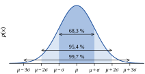

Приложение А. Математический минимум
Здесь собраны сведения из линейной алгебры, математического анализа и теории вероятностей, на которые опираются главы. Доказательства не приводятся, но каждое понятие сопровождается коротким примером.
А.1 Векторы и матрицы
Векторы. Вектор \mathbf{a} = (a_1, \ldots, a_n)^{\mathrm{T}} — упорядоченный набор из n чисел; по умолчанию его записывают столбцом. Векторы одной длины складывают и умножают на число покомпонентно. Скалярное произведение
\langle \mathbf{a}, \mathbf{b} \rangle = \mathbf{a}^{\mathrm{T}} \mathbf{b} = \sum_{j=1}^{n} a_j b_j
равно нулю, если векторы ортогональны (перпендикулярны). Длину вектора измеряют нормой. Евклидова норма \|\mathbf{a}\|_2 = \sqrt{\langle \mathbf{a}, \mathbf{a} \rangle} — обычная длина, норма L1 \|\mathbf{a}\|_1 = \sum_j |a_j| — сумма модулей компонент. Для \mathbf{a} = (3;\, -4): \|\mathbf{a}\|_2 = 5, \|\mathbf{a}\|_1 = 7.
Матрицы. Матрица \mathbf{A} размера m \times n — таблица чисел a_{ij} из m строк и n столбцов. Произведение матриц \mathbf{A} (m \times n) и \mathbf{B} (n \times k) — матрица m \times k с элементами
(\mathbf{A}\mathbf{B})_{ik} = \sum_{j=1}^{n} a_{ij} b_{jk}:
элемент на пересечении строки i и столбца k — скалярное произведение i-й строки \mathbf{A} на k-й столбец \mathbf{B}. Число столбцов первой матрицы должно совпадать с числом строк второй, и в общем случае \mathbf{A}\mathbf{B} \ne \mathbf{B}\mathbf{A}. Вектор — матрица из одного столбца, поэтому \mathbf{F}\boldsymbol{\theta} — вектор, i-я компонента которого равна скалярному произведению i-й строки \mathbf{F} на \boldsymbol{\theta}, то есть прогнозу линейной модели на i-м объекте.
Транспонирование \mathbf{A}^{\mathrm{T}} меняет строки и столбцы местами; (\mathbf{A}\mathbf{B})^{\mathrm{T}} = \mathbf{B}^{\mathrm{T}} \mathbf{A}^{\mathrm{T}}. Матрица \mathbf{A} симметрична, если \mathbf{A}^{\mathrm{T}} = \mathbf{A}; например, \mathbf{F}^{\mathrm{T}} \mathbf{F} симметрична при любой \mathbf{F}.
Обратная матрица. Единичная матрица \mathbf{I} — квадратная, с единицами на диагонали и нулями вне её; \mathbf{I}\mathbf{a} = \mathbf{a}. Обратная к квадратной матрице \mathbf{A} — матрица \mathbf{A}^{-1}, для которой \mathbf{A}\mathbf{A}^{-1} = \mathbf{A}^{-1}\mathbf{A} = \mathbf{I}. Тогда система \mathbf{A}\boldsymbol{\theta} = \mathbf{b} имеет единственное решение \boldsymbol{\theta} = \mathbf{A}^{-1}\mathbf{b}. Обратная матрица существует, только если определитель \det \mathbf{A} \ne 0, или, что то же самое, если столбцы \mathbf{A} линейно независимы — ни один не выражается как сумма остальных, умноженных на числа. Для матрицы 2 \times 2
\begin{pmatrix} a & b \\ c & d \end{pmatrix}^{-1} = \frac{1}{ad - bc} \begin{pmatrix} d & -b \\ -c & a \end{pmatrix}, \qquad \det = ad - bc.
Например, у матрицы со строками (3;\, 6) и (6;\, 14) определитель 3 \cdot 14 - 6 \cdot 6 = 6, и обратная матрица имеет строки (7/3;\, -1) и (-1;\, 1/2); умножением легко проверить, что произведение равно \mathbf{I}.
Ортогональные матрицы и собственные значения. Квадратная матрица \mathbf{U} ортогональна, если \mathbf{U}^{\mathrm{T}}\mathbf{U} = \mathbf{I}: её столбцы имеют единичную длину и попарно ортогональны (ортонормированы). Умножение на такую матрицу поворачивает или отражает вектор, не меняя его длины. Число s и ненулевой вектор \mathbf{u} — собственное значение и собственный вектор матрицы \mathbf{S}, если \mathbf{S}\mathbf{u} = s\,\mathbf{u}: матрица только растягивает этот вектор в s раз. У симметричной матрицы собственные значения вещественные, а собственные векторы можно выбрать ортонормированными; у матрицы \mathbf{F}^{\mathrm{T}}\mathbf{F} все собственные значения неотрицательны.
А.2 Производная и градиент
Производная f'(x) — скорость изменения функции: при малом приращении \Delta x значение меняется примерно на f'(x)\,\Delta x. Основные формулы:
(x^a)' = a x^{a - 1}, \qquad (e^x)' = e^x, \qquad (\ln x)' = \frac{1}{x},
(u + v)' = u' + v', \qquad (uv)' = u'v + uv', \qquad \bigl(f(u(x))\bigr)' = f'(u)\, u'(x).
Последнее — правило дифференцирования сложной функции: производная внешней функции, умноженная на производную внутренней. Например, для логистической потери из гл. 7
\bigl(\ln(1 + e^{-z})\bigr)' = \frac{1}{1 + e^{-z}} \cdot (-e^{-z}) = -\frac{1}{e^{z} + 1} = \sigma(z) - 1.
В точке минимума или максимума гладкой функции производная равна нулю.
Частные производные и градиент. Если функция зависит от нескольких переменных, Q(\theta_1, \ldots, \theta_n), её частная производная \partial Q / \partial \theta_j — обычная производная по \theta_j при фиксированных остальных переменных. Вектор частных производных называют градиентом:
\nabla Q = \biggl(\frac{\partial Q}{\partial \theta_1}, \ldots, \frac{\partial Q}{\partial \theta_n}\biggr)^{\mathrm{T}}.
Градиент указывает направление наискорейшего роста функции, антиградиент -\nabla Q — наискорейшего убывания; в точке минимума \nabla Q = \mathbf{0}. Например, для Q = \theta_1^2 + 3\theta_2^2 градиент \nabla Q = (2\theta_1;\, 6\theta_2), в точке (1;\, 1) он равен (2;\, 6): функция быстрее всего растёт вдоль \theta_2.
Для линейных и квадратичных функций векторного аргумента удобны готовые формулы (матрица \mathbf{A} симметрична):
\nabla \langle \mathbf{a}, \boldsymbol{\theta} \rangle = \mathbf{a}, \qquad \nabla \bigl(\boldsymbol{\theta}^{\mathrm{T}} \mathbf{A} \boldsymbol{\theta}\bigr) = 2\mathbf{A}\boldsymbol{\theta}, \qquad \nabla \|\mathbf{F}\boldsymbol{\theta} - \mathbf{y}\|_2^2 = 2\mathbf{F}^{\mathrm{T}}(\mathbf{F}\boldsymbol{\theta} - \mathbf{y}).
Они аналогичны одномерным (ax)' = a и (ax^2)' = 2ax.
Выпуклые функции. Функция выпукла, если отрезок, соединяющий любые две точки её графика, лежит не ниже графика. У выпуклой функции любой локальный минимум глобальный, и градиентный спуск не застревает в «ложных» минимумах. Выпуклы \theta^2, |\theta|, e^{\theta}, \ln(1 + e^{-\theta}); сумма выпуклых функций и выпуклая функция от линейной функции параметров тоже выпуклы. Поэтому выпуклы эмпирический риск линейной регрессии с квадратичной потерей и логистической регрессии, в том числе со штрафами L1 и L2.
А.3 Вероятность
События. Вероятность P(A) события A — число от 0 до 1. Её можно понимать как долю случаев, в которых A происходит, при многократном повторении опыта; поэтому вероятности оценивают частотами в выборке. Условная вероятность A при условии B —
P(A \mid B) = \frac{P(A \cap B)}{P(B)},
где A \cap B — событие «произошли и A, и B». Отсюда правило умножения P(A \cap B) = P(B)\, P(A \mid B). События независимы, если P(A \cap B) = P(A)\, P(B), то есть знание о B не меняет вероятность A: P(A \mid B) = P(A). События условно независимы при условии C, если P(A \cap B \mid C) = P(A \mid C)\, P(B \mid C); на этом допущении построен наивный байесовский классификатор (гл. 9).
Если события B_1, \ldots, B_K попарно несовместны и одно из них обязательно происходит, верна формула полной вероятности P(A) = \sum_{k} P(B_k)\, P(A \mid B_k), а из правила умножения следует формула Байеса
P(B_k \mid A) = \frac{P(B_k)\, P(A \mid B_k)}{P(A)}.
Пример. Пусть 20 % модулей программы большие, и ошибки находят в 30 % больших модулей и в 5 % остальных. По формуле полной вероятности ошибку найдут в доле модулей 0{,}2 \cdot 0{,}3 + 0{,}8 \cdot 0{,}05 = 0{,}1. Если в модуле нашли ошибку, он большой с вероятностью 0{,}06 / 0{,}1 = 0{,}6 — втрое выше, чем доля больших модулей среди всех.
Случайные величины. Случайная величина \xi принимает числовые значения с некоторыми вероятностями. Если значения x_1, x_2, \ldots принимаются с вероятностями p_1, p_2, \ldots, математическое ожидание (среднее значение) и дисперсия равны
\mathbb{E}(\xi) = \sum_{k} x_k p_k, \qquad \mathrm{D}(\xi) = \mathbb{E}\bigl((\xi - \mathbb{E}(\xi))^2\bigr) = \mathbb{E}(\xi^2) - \bigl(\mathbb{E}(\xi)\bigr)^2.
Дисперсия измеряет разброс значений вокруг среднего; корень из неё, \sqrt{\mathrm{D}(\xi)}, — стандартное отклонение, оно измеряется в тех же единицах, что и \xi. Свойства: \mathbb{E}(a\xi + b) = a\,\mathbb{E}(\xi) + b, \mathrm{D}(a\xi + b) = a^2\, \mathrm{D}(\xi); ожидание суммы равно сумме ожиданий, а дисперсия суммы независимых величин — сумме дисперсий. Например, величина, равная 1 с вероятностью p и 0 с вероятностью 1 - p (распределение Бернулли, модель бинарного ответа), имеет \mathbb{E}(\xi) = p и \mathrm{D}(\xi) = p(1 - p).
По выборке значений u_1, \ldots, u_\ell ожидание оценивают средним \bar u = \frac{1}{\ell} \sum_i u_i, дисперсию — средним квадратом отклонения \frac{1}{\ell} \sum_i (u_i - \bar u)^2 (иногда делят на \ell - 1; при больших \ell разница мала).
Непрерывные величины. Значения непрерывной величины описывает плотность p(x) \ge 0: вероятность попасть в интервал (a, b) равна площади под графиком плотности над этим интервалом, \int_a^b p(x)\,dx, а вся площадь равна единице. Само значение плотности — не вероятность и может быть больше единицы. Ожидание вычисляют как \mathbb{E}(\xi) = \int x\, p(x)\, dx.
Нормальное (гауссовское) распределение N(\mu, \sigma^2) со средним \mu и дисперсией \sigma^2 имеет плотность
p(x) = \frac{1}{\sqrt{2\pi}\,\sigma} \exp\biggl(-\frac{(x - \mu)^2}{2\sigma^2}\biggr).
Её график — симметричный «колокол» с вершиной в \mu (рис. А.1). В интервал \mu \pm \sigma попадает около 68 % значений, в \mu \pm 2\sigma — около 95 %, в \mu \pm 3\sigma — около 99,7 % (правило трёх сигм): значение, отстоящее от среднего больше чем на 3\sigma, — редкость, и его стоит проверить как возможный выброс.

Нормально распределены, по крайней мере приближённо, суммы многих независимых малых случайных слагаемых, поэтому этим распределением часто описывают шум измерений. Распределение Лапласа с плотностью p(x) = \frac{1}{2b} \exp(-|x - \mu| / b) имеет более острую вершину и более «тяжёлые» хвосты, чем нормальное.
А.4 Экспонента и логарифм
Число e \approx 2{,}718; функция e^x (также \exp x) положительна и возрастает. Натуральный логарифм \ln x — обратная к ней функция, определённая при x > 0: \ln e^x = x. Основные свойства:
e^{a + b} = e^a e^b, \qquad \ln(ab) = \ln a + \ln b, \qquad \ln \frac{a}{b} = \ln a - \ln b, \qquad \ln a^k = k \ln a.
Логарифм превращает произведение в сумму — поэтому правдоподобие (произведение вероятностей) заменяют его логарифмом. Логарифм возрастает, поэтому положительная функция и её логарифм достигают максимума в одной и той же точке. Логарифмы по разным основаниям отличаются множителем: \log_2 x = \ln x / \ln 2.